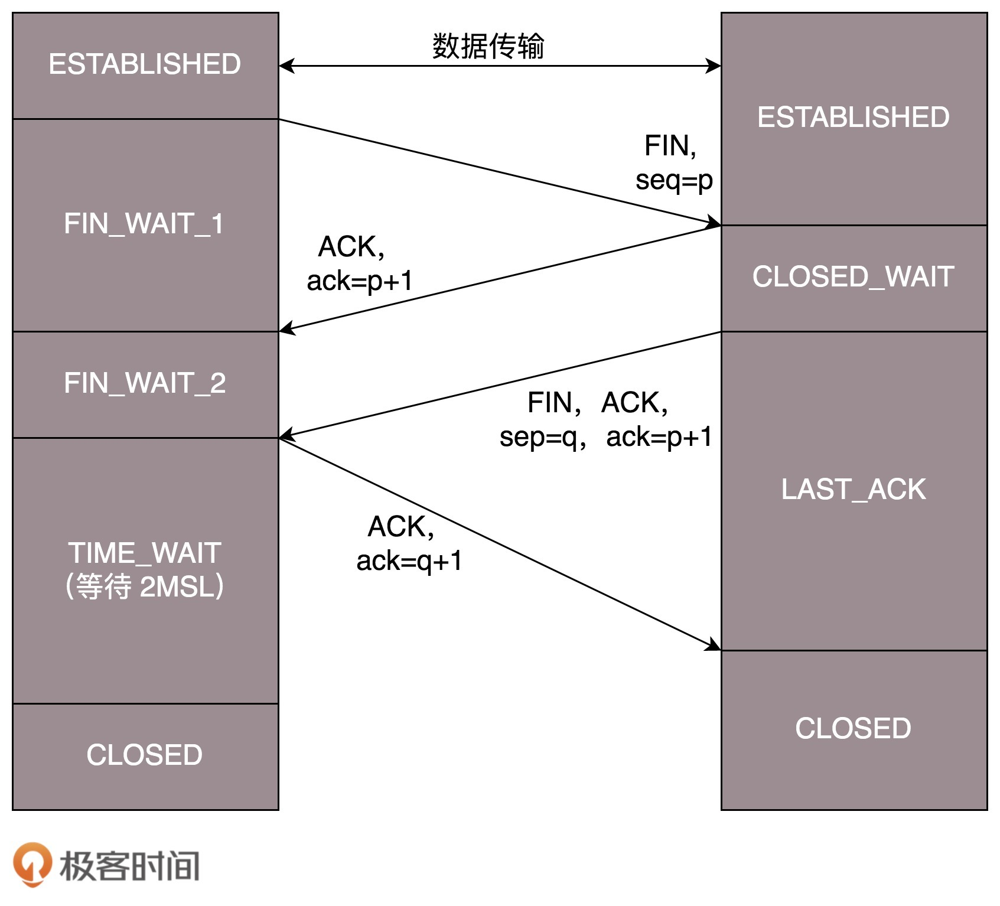

- 00 开篇词 想成为技术牛人？先搞定网络协议！.md
- 01 为什么要学习网络协议？.md
- 02 网络分层的真实含义是什么？.md
- 03 ifconfig：最熟悉又陌生的命令行.md
- 04 DHCP与PXE：IP是怎么来的，又是怎么没的？.md
- 05 从物理层到MAC层：如何在宿舍里自己组网玩联机游戏？.md
- 06 交换机与VLAN：办公室太复杂，我要回学校.md
- 07 ICMP与ping：投石问路的侦察兵.md
- 08 世界这么大，我想出网关：欧洲十国游与玄奘西行.md
- 09 路由协议：西出网关无故人，敢问路在何方.md
- 10 UDP协议：因性善而简单，难免碰到“城会玩”.md
- 11 TCP协议（上）：因性恶而复杂，先恶后善反轻松.md
- 12 TCP协议（下）：西行必定多妖孽，恒心智慧消磨难.md
- 13 套接字Socket：Talk is cheap, show me the code.md
- 14 HTTP协议：看个新闻原来这么麻烦.md
- 15 HTTPS协议：点外卖的过程原来这么复杂.md
- 16 流媒体协议：如何在直播里看到美女帅哥？.md
- 17 P2P协议：我下小电影，99%急死你.md
- 18 DNS协议：网络世界的地址簿.md
- 19 HttpDNS：网络世界的地址簿也会指错路.md
- 20 CDN：你去小卖部取过快递么？.md
- 21 数据中心：我是开发商，自己拿地盖别墅.md
- 22 VPN：朝中有人好做官.md
- 23 移动网络：去巴塞罗那，手机也上不了脸书.md
- 24 云中网络：自己拿地成本高，购买公寓更灵活.md
- 25 软件定义网络：共享基础设施的小区物业管理办法.md
- 26 云中的网络安全：虽然不是土豪，也需要基本安全和保障.md
- 27 云中的网络QoS：邻居疯狂下电影，我该怎么办？.md
- 28 云中网络的隔离GRE、VXLAN：虽然住一个小区，也要保护隐私.md
- 29 容器网络：来去自由的日子，不买公寓去合租.md
- 30 容器网络之Flannel：每人一亩三分地.md
- 31 容器网络之Calico：为高效说出善意的谎言.md
- 32 RPC协议综述：远在天边，近在眼前.md
- 33 基于XML的SOAP协议：不要说NBA，请说美国职业篮球联赛.md
- 34 基于JSON的RESTful接口协议：我不关心过程，请给我结果.md
- 35 二进制类RPC协议：还是叫NBA吧，总说全称多费劲.md
- 36 跨语言类RPC协议：交流之前，双方先来个专业术语表.md
- 37 知识串：用双十一的故事串起碎片的网络协议（上）.md
- 38 知识串：用双十一的故事串起碎片的网络协议（中）.md
- 39 知识串：用双十一的故事串起碎片的网络协议（下）.md
- 40 搭建一个网络实验环境：授人以鱼不如授人以渔.md
- 加餐1 创作故事：我是如何创作“趣谈网络协议”专栏的？.md
- 协议专栏特别福利 答疑解惑1期.md
- 协议专栏特别福利 答疑解惑2期.md
- 协议专栏特别福利 答疑解惑3期.md
- 协议专栏特别福利 答疑解惑4期.md
- 协议专栏特别福利 答疑解惑5期.md
- 结束语 放弃完美主义，执行力就是限时限量认真完成.md
11 TCP协议（上）：因性恶而复杂，先恶后善反轻松
上一节，我们讲的UDP，基本上包括了传输层所必须的端口字段。它就像我们小时候一样简单，相信“网之初，性本善，不丢包，不乱序”。
后来呢，我们都慢慢长大，了解了社会的残酷，变得复杂而成熟，就像TCP协议一样。它之所以这么复杂，那是因为它秉承的是“性恶论”。它天然认为网络环境是恶劣的，丢包、乱序、重传，拥塞都是常有的事情，一言不合就可能送达不了，因而要从算法层面来保证可靠性。
TCP包头格式
我们先来看TCP头的格式。从这个图上可以看出，它比UDP复杂得多。

首先，源端口号和目标端口号是不可少的，这一点和UDP是一样的。如果没有这两个端口号。数据就不知道应该发给哪个应用。
接下来是包的序号。为什么要给包编号呢？当然是为了解决乱序的问题。不编好号怎么确认哪个应该先来，哪个应该后到呢。编号是为了解决乱序问题。既然是社会老司机，做事当然要稳重，一件件来，面临再复杂的情况，也临危不乱。
还应该有的就是确认序号。发出去的包应该有确认，要不然我怎么知道对方有没有收到呢？如果没有收到就应该重新发送，直到送达。这个可以解决不丢包的问题。作为老司机，做事当然要靠谱，答应了就要做到，暂时做不到也要有个回复。
TCP是靠谱的协议，但是这不能说明它面临的网络环境好。从IP层面来讲，如果网络状况的确那么差，是没有任何可靠性保证的，而作为IP的上一层TCP也无能为力，唯一能做的就是更加努力，不断重传，通过各种算法保证。也就是说，对于TCP来讲，IP层你丢不丢包，我管不着，但是我在我的层面上，会努力保证可靠性。
这有点像如果你在北京，和客户约十点见面，那么你应该清楚堵车是常态，你干预不了，也控制不了，你唯一能做的就是早走。打车不行就改乘地铁，尽力不失约。
接下来有一些状态位。例如SYN是发起一个连接，ACK是回复，RST是重新连接，FIN是结束连接等。TCP是面向连接的，因而双方要维护连接的状态，这些带状态位的包的发送，会引起双方的状态变更。
不像小时候，随便一个不认识的小朋友都能玩在一起，人大了，就变得礼貌，优雅而警觉，人与人遇到会互相热情的寒暄，离开会不舍地道别，但是人与人之间的信任会经过多次交互才能建立。
还有一个重要的就是窗口大小。TCP要做流量控制，通信双方各声明一个窗口，标识自己当前能够的处理能力，别发送的太快，撑死我，也别发的太慢，饿死我。
作为老司机，做事情要有分寸，待人要把握尺度，既能适当提出自己的要求，又不强人所难。除了做流量控制以外，TCP还会做拥塞控制，对于真正的通路堵车不堵车，它无能为力，唯一能做的就是控制自己，也即控制发送的速度。不能改变世界，就改变自己嘛。
作为老司机，要会自我控制，知进退，知道什么时候应该坚持，什么时候应该让步。
通过对TCP头的解析，我们知道要掌握TCP协议，重点应该关注以下几个问题：
-
顺序问题 ，稳重不乱；
-
丢包问题，承诺靠谱；
-
连接维护，有始有终；
-
流量控制，把握分寸；
-
拥塞控制，知进知退。
TCP的三次握手
所有的问题，首先都要先建立一个连接，所以我们先来看连接维护问题。
TCP的连接建立，我们常常称为三次握手。
A：您好，我是A。
B：您好A，我是B。
A：您好B。
我们也常称为“请求->应答->应答之应答”的三个回合。这个看起来简单，其实里面还是有很多的学问，很多的细节。
首先，为什么要三次，而不是两次？按说两个人打招呼，一来一回就可以了啊？为了可靠，为什么不是四次？
我们还是假设这个通路是非常不可靠的，A要发起一个连接，当发了第一个请求杳无音信的时候，会有很多的可能性，比如第一个请求包丢了，再如没有丢，但是绕了弯路，超时了，还有B没有响应，不想和我连接。
A不能确认结果，于是再发，再发。终于，有一个请求包到了B，但是请求包到了B的这个事情，目前A还是不知道的，A还有可能再发。
B收到了请求包，就知道了A的存在，并且知道A要和它建立连接。如果B不乐意建立连接，则A会重试一阵后放弃，连接建立失败，没有问题；如果B是乐意建立连接的，则会发送应答包给A。
当然对于B来说，这个应答包也是一入网络深似海，不知道能不能到达A。这个时候B自然不能认为连接是建立好了，因为应答包仍然会丢，会绕弯路，或者A已经挂了都有可能。
而且这个时候B还能碰到一个诡异的现象就是，A和B原来建立了连接，做了简单通信后，结束了连接。还记得吗？A建立连接的时候，请求包重复发了几次，有的请求包绕了一大圈又回来了，B会认为这也是一个正常的的请求的话，因此建立了连接，可以想象，这个连接不会进行下去，也没有个终结的时候，纯属单相思了。因而两次握手肯定不行。
B发送的应答可能会发送多次，但是只要一次到达A，A就认为连接已经建立了，因为对于A来讲，他的消息有去有回。A会给B发送应答之应答，而B也在等这个消息，才能确认连接的建立，只有等到了这个消息，对于B来讲，才算它的消息有去有回。
当然A发给B的应答之应答也会丢，也会绕路，甚至B挂了。按理来说，还应该有个应答之应答之应答，这样下去就没底了。所以四次握手是可以的，四十次都可以，关键四百次也不能保证就真的可靠了。只要双方的消息都有去有回，就基本可以了。
好在大部分情况下，A和B建立了连接之后，A会马上发送数据的，一旦A发送数据，则很多问题都得到了解决。例如A发给B的应答丢了，当A后续发送的数据到达的时候，B可以认为这个连接已经建立，或者B压根就挂了，A发送的数据，会报错，说B不可达，A就知道B出事情了。
当然你可以说A比较坏，就是不发数据，建立连接后空着。我们在程序设计的时候，可以要求开启keepalive机制，即使没有真实的数据包，也有探活包。
另外，你作为服务端B的程序设计者，对于A这种长时间不发包的客户端，可以主动关闭，从而空出资源来给其他客户端使用。
三次握手除了双方建立连接外，主要还是为了沟通一件事情，就是TCP包的序号的问题。
A要告诉B，我这面发起的包的序号起始是从哪个号开始的，B同样也要告诉A，B发起的包的序号起始是从哪个号开始的。为什么序号不能都从1开始呢？因为这样往往会出现冲突。
例如，A连上B之后，发送了1、2、3三个包，但是发送3的时候，中间丢了，或者绕路了，于是重新发送，后来A掉线了，重新连上B后，序号又从1开始，然后发送2，但是压根没想发送3，但是上次绕路的那个3又回来了，发给了B，B自然认为，这就是下一个包，于是发生了错误。
因而，每个连接都要有不同的序号。这个序号的起始序号是随着时间变化的，可以看成一个32位的计数器，每4微秒加一，如果计算一下，如果到重复，需要4个多小时，那个绕路的包早就死翘翘了，因为我们都知道IP包头里面有个TTL，也即生存时间。
好了，双方终于建立了信任，建立了连接。前面也说过，为了维护这个连接，双方都要维护一个状态机，在连接建立的过程中，双方的状态变化时序图就像这样。

一开始，客户端和服务端都处于CLOSED状态。先是服务端主动监听某个端口，处于LISTEN状态。然后客户端主动发起连接SYN，之后处于SYN-SENT状态。服务端收到发起的连接，返回SYN，并且ACK客户端的SYN，之后处于SYN-RCVD状态。客户端收到服务端发送的SYN和ACK之后，发送ACK的ACK，之后处于ESTABLISHED状态，因为它一发一收成功了。服务端收到ACK的ACK之后，处于ESTABLISHED状态，因为它也一发一收了。
TCP四次挥手
好了，说完了连接，接下来说一说“拜拜”，好说好散。这常被称为四次挥手。
A：B啊，我不想玩了。
B：哦，你不想玩了啊，我知道了。
这个时候，还只是A不想玩了，也即A不会再发送数据，但是B能不能在ACK的时候，直接关闭呢？当然不可以了，很有可能A是发完了最后的数据就准备不玩了，但是B还没做完自己的事情，还是可以发送数据的，所以称为半关闭的状态。
这个时候A可以选择不再接收数据了，也可以选择最后再接收一段数据，等待B也主动关闭。
B：A啊，好吧，我也不玩了，拜拜。
A：好的，拜拜。
这样整个连接就关闭了。但是这个过程有没有异常情况呢？当然有，上面是和平分手的场面。
A开始说“不玩了”，B说“知道了”，这个回合，是没什么问题的，因为在此之前，双方还处于合作的状态，如果A说“不玩了”，没有收到回复，则A会重新发送“不玩了”。但是这个回合结束之后，就有可能出现异常情况了，因为已经有一方率先撕破脸。
一种情况是，A说完“不玩了”之后，直接跑路，是会有问题的，因为B还没有发起结束，而如果A跑路，B就算发起结束，也得不到回答，B就不知道该怎么办了。另一种情况是，A说完“不玩了”，B直接跑路，也是有问题的，因为A不知道B是还有事情要处理，还是过一会儿会发送结束。
那怎么解决这些问题呢？TCP协议专门设计了几个状态来处理这些问题。我们来看断开连接的时候的状态时序图。

断开的时候，我们可以看到，当A说“不玩了”，就进入FIN_WAIT_1的状态，B收到“A不玩”的消息后，发送知道了，就进入CLOSE_WAIT的状态。
A收到“B说知道了”，就进入FIN_WAIT_2的状态，如果这个时候B直接跑路，则A将永远在这个状态。TCP协议里面并没有对这个状态的处理，但是Linux有，可以调整tcp_fin_timeout这个参数，设置一个超时时间。
如果B没有跑路，发送了“B也不玩了”的请求到达A时，A发送“知道B也不玩了”的ACK后，从FIN_WAIT_2状态结束，按说A可以跑路了，但是最后的这个ACK万一B收不到呢？则B会重新发一个“B不玩了”，这个时候A已经跑路了的话，B就再也收不到ACK了，因而TCP协议要求A最后等待一段时间TIME_WAIT，这个时间要足够长，长到如果B没收到ACK的话，“B说不玩了”会重发的，A会重新发一个ACK并且足够时间到达B。
A直接跑路还有一个问题是，A的端口就直接空出来了，但是B不知道，B原来发过的很多包很可能还在路上，如果A的端口被一个新的应用占用了，这个新的应用会收到上个连接中B发过来的包，虽然序列号是重新生成的，但是这里要上一个双保险，防止产生混乱，因而也需要等足够长的时间，等到原来B发送的所有的包都死翘翘，再空出端口来。
等待的时间设为2MSL，MSL是Maximum Segment Lifetime，报文最大生存时间，它是任何报文在网络上存在的最长时间，超过这个时间报文将被丢弃。因为TCP报文基于是IP协议的，而IP头中有一个TTL域，是IP数据报可以经过的最大路由数，每经过一个处理他的路由器此值就减1，当此值为0则数据报将被丢弃，同时发送ICMP报文通知源主机。协议规定MSL为2分钟，实际应用中常用的是30秒，1分钟和2分钟等。
还有一个异常情况就是，B超过了2MSL的时间，依然没有收到它发的FIN的ACK，怎么办呢？按照TCP的原理，B当然还会重发FIN，这个时候A再收到这个包之后，A就表示，我已经在这里等了这么长时间了，已经仁至义尽了，之后的我就都不认了，于是就直接发送RST，B就知道A早就跑了。
TCP状态机
将连接建立和连接断开的两个时序状态图综合起来，就是这个著名的TCP的状态机。学习的时候比较建议将这个状态机和时序状态机对照着看，不然容易晕。
在这个图中，加黑加粗的部分，是上面说到的主要流程，其中阿拉伯数字的序号，是连接过程中的顺序，而大写中文数字的序号，是连接断开过程中的顺序。加粗的实线是客户端A的状态变迁，加粗的虚线是服务端B的状态变迁。
小结
好了，这一节就到这里了，我来做一个总结：
-
TCP包头很复杂，但是主要关注五个问题，顺序问题，丢包问题，连接维护，流量控制，拥塞控制；
-
连接的建立是经过三次握手，断开的时候四次挥手，一定要掌握的我画的那个状态图。
最后，给你留两个思考题。
-
TCP的连接有这么多的状态，你知道如何在系统中查看某个连接的状态吗？
-
这一节仅仅讲了连接维护问题，其实为了维护连接的状态，还有其他的数据结构来处理其他的四个问题，那你知道是什么吗？
欢迎你留言和我讨论。趣谈网络协议，我们下期见！
© 2019 - 2023 Liangliang Lee. Powered by Vert.x and hexo-theme-book.